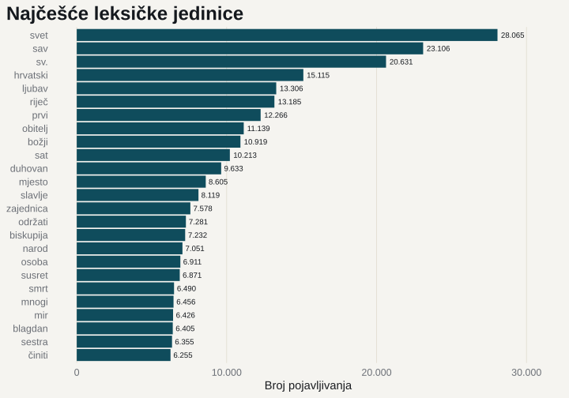
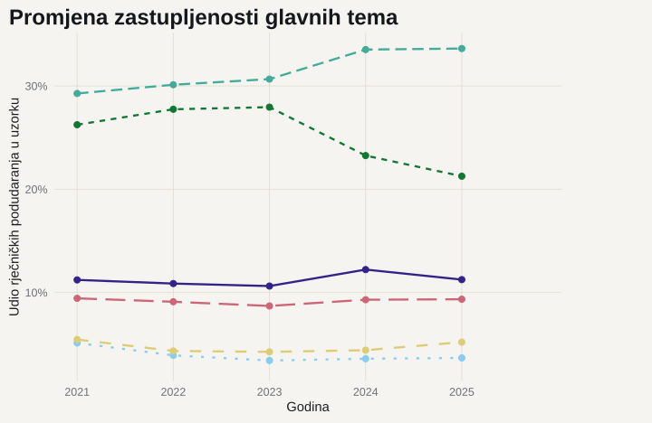
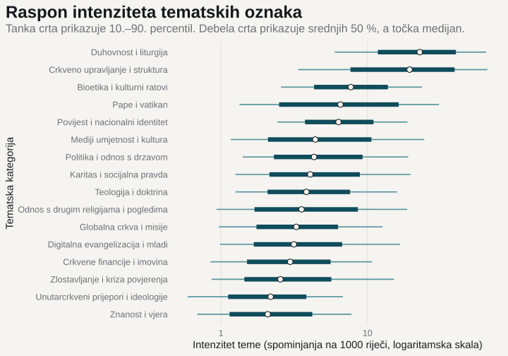
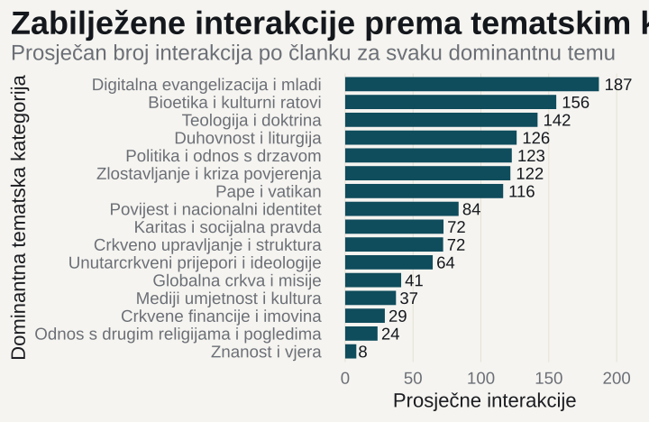
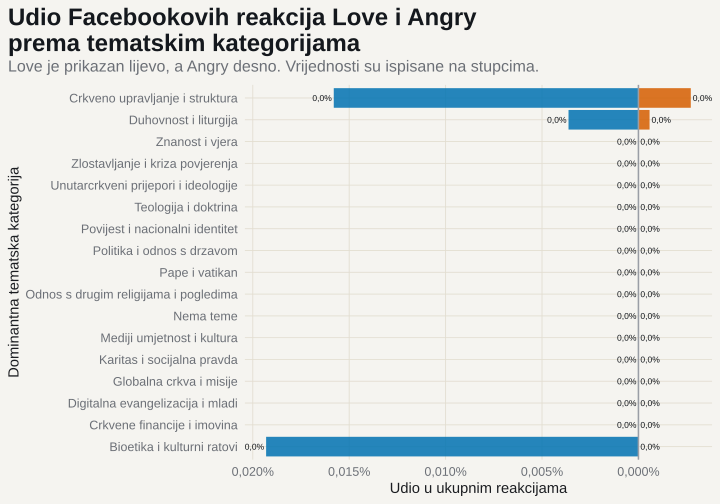
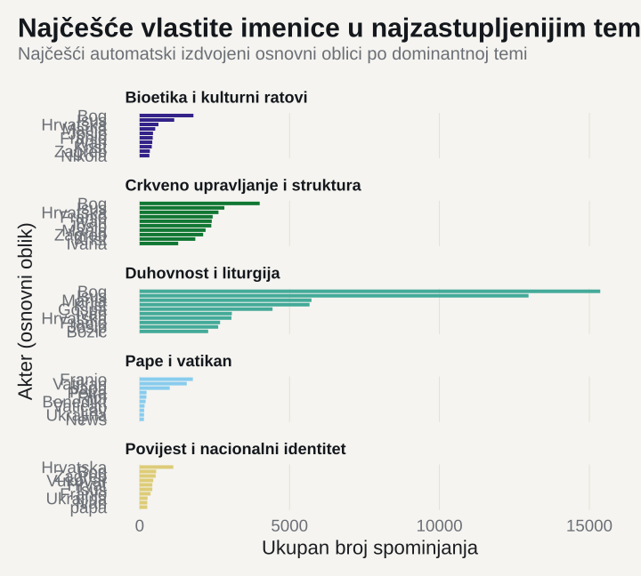
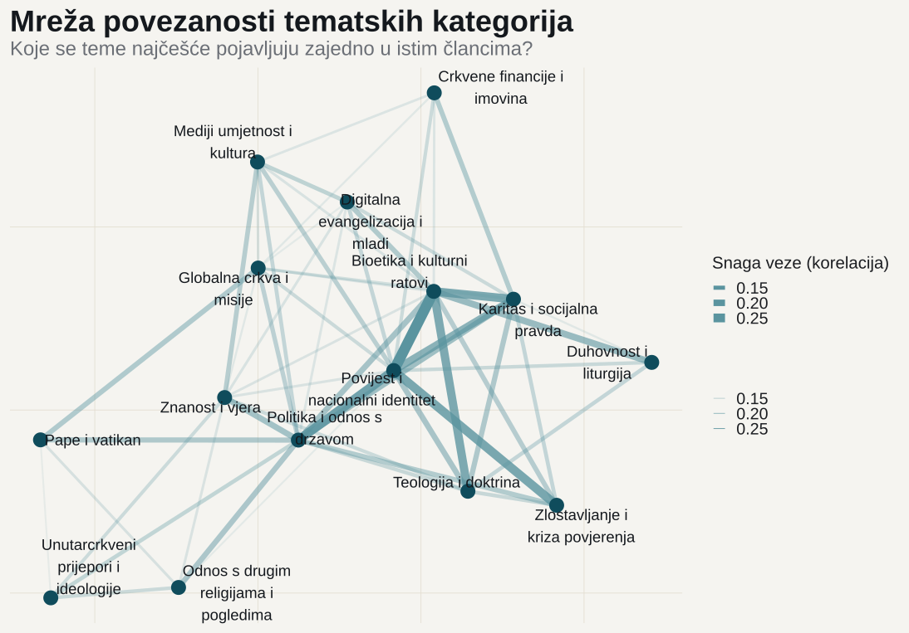

Tematske struje — anatomija diskursa katoličkog digitalnog prostora u Hrvatskoj (2021.–2026.)
Tematske struje na dijelu korpusa
Tematske struje
Računalna obrada teksta
16 kategorija
Tematske struje prikazuju učestalost, intenzitet, zabilježene reakcije i supojavljivanje 16 rječnički definiranih tema u dijelu korpusa DigiKat.
Uvod u analizu sadržaja diskursa
Ažurirano24. kolovoza 2026. Podaci zaključno s11. lipnja 2026. StatusPreliminarno
Sažetak u 60 sekundi
Mapa pokazuje koje se rječnički definirane teme pojavljuju u dijelu korpusa i uz koje se signale recepcije vežu.
- Najzastupljenije teme nisu nužno i teme s najviše prosječnih interakcija.
- Teme se razlikuju po gustoći rječničkih podudaranja i Facebookovim reakcijama.
- Mreža pokazuje preklapanje tema, a ne odvojene diskursne svjetove.
Može se zaključiti kako se unaprijed definirane tematske oznake raspoređuju u uzorku. Ne može se zaključiti da rječnik obuhvaća cjelovito značenje teksta ili uzrokuje reakciju publike. Pojedinosti o uzorku i rječnicima nalaze se u Metodologiji.
O čemu se zapravo piše kada se piše o katoličkim temama, i koje teme izazovu najviše reakcija? Nakon pregleda glavnih aktera i platformi u Mapi ekosustava, na sadržaj se usmjerava analitička mapa Tematske struje. Odgovara na istraživačka pitanja Q1 (što se objavljuje) i Q2 (uz koje se druge teme katoličke teme nalaze).
Teme su prepoznate računalnom obradom teksta na dijelu korpusa od 413.985 objava, na 20.658 dokumenata iz razdoblja 2021.–2026. Veličina i način izvlačenja tog uzorka opisani su u Metodologiji. Godina 2026. nepotpuna je, pa usporedbe po godinama uključuju djelomično razdoblje.
Cilj mape jest dati pregled sadržaja u tri dijela. Prvi prikazuje učestalost i gustoću unaprijed definiranih tematskih rječnika. Drugi uspoređuje zabilježene interakcije te Facebookove reakcije Love i Angry među dominantnim temama. Treći prikazuje najčešće vlastite imenice i supojavljivanje tematskih oznaka. 16 kategorija definirano je teološkom i komunikološkom ekspertizom. Riječ je o vođenom rječničkom označavanju, a ne o neovisno validiranoj klasifikaciji cjelokupnog značenja teksta.
16
Tematskih kategorija
20.658
Dokumenata u uzorku
413.985
Medijskih objava
2021.–2026.
Razdoblje analize
Računalna obrada teksta Tematski rječnici Mrežna analiza
Leksička struktura uzorka
Prije tematskog označavanja, prikaz rangira 25 najčešćih imenica, pridjeva i glagola u analiziranom dijelu korpusa, svedenih na osnovni oblik riječi. Ne prikazuje sve 413.985 objave. Prema novom uzorku prednjače riječi svet, sav, sv., hrvatski, ljubav, riječ, prvi, obitelj i božji. Frekvencija sama po sebi ne razlikuje temu, stav ni važnost riječi unutar pojedinoga dokumenta.
Pitanje. Koje su leksičke jedinice najčešće u analiziranom uzorku?
Nalaz. Najčešće riječi pružaju orijentaciju, ali ne razlikuju temu, stav ni ulogu riječi u dokumentu.
Sažetak grafikona. Najčešće leksičke jedinice uključuju svet, sav, sv., hrvatski, ljubav, riječ, prvi, obitelj i božji. Frekvencija sama ne određuje temu ili stav.
{kind=link}
Prikažite podatke u tablici
| Leksička jedinica | Broj |
|---|---|
| svet | 28065 |
| sav | 23106 |
| sv. | 20631 |
| hrvatski | 15115 |
| ljubav | 13306 |
| riječ | 13185 |
| prvi | 12266 |
| obitelj | 11139 |
| božji | 10919 |
| sat | 10213 |
| duhovan | 9633 |
| mjesto | 8605 |
| slavlje | 8119 |
| zajednica | 7578 |
| održati | 7281 |
| biskupija | 7232 |
| narod | 7051 |
| osoba | 6911 |
| susret | 6871 |
| smrt | 6490 |
| mnogi | 6456 |
| mir | 6426 |
| blagdan | 6405 |
| sestra | 6355 |
| činiti | 6255 |
Poredak zato služi kao leksička orijentacija. Česte crkvene, društvene i vremenske riječi pokazuju širinu rječnika uzorka, ali za tvrdnje o narativima i odnosima među temama potrebne su strukturirane analize koje slijede.
Struktura tematskog pejzaža
Prvi dio tematske analize usmjeren je prema razumijevanju opće strukture diskursa. U tom cilju odgovaramo na tri pitanja. Koje tematske kategorije prevladavaju, a koje zauzimaju marginalne pozicije? Kako se njihova zastupljenost mijenja kroz promatrano razdoblje? Koliko su te teme centralne za članke u kojima se pojavljuju?
Vremenska dinamika tematskih kategorija
Prema ukupnom broju rječničkih podudaranja u uzorku najzastupljenije su teme Duhovnost i liturgija, Crkveno upravljanje i struktura i Bioetika i kulturni ratovi. Grafikon prikazuje samo teme koje u barem jednom prikazanom presjeku prelaze 5 % spominjanja. Razlike među godinama opisne su.
Pitanje. Kako se udio najzastupljenijih tematskih oznaka mijenja po godinama?
Nalaz. Glavne tematske struje mijenjaju udjele, ali zadržavaju prepoznatljivu prisutnost u svim dostupnim presjecima.

Sažetak grafikona. Najzastupljenije tematske oznake u prikazanim godinama jesu Duhovnost i liturgija, Crkveno upravljanje i struktura i Bioetika i kulturni ratovi. Razlike su opisne i temelje se na uzorku.
{kind=link}
Prikažite podatke u tablici
| Godina | Tema | Spominjanja | Udio |
|---|---|---|---|
| 2021 | Bioetika i kulturni ratovi | 13232 | 0.1122231 |
| 2021 | Crkveno upravljanje i struktura | 30945 | 0.2624504 |
| 2021 | Duhovnost i liturgija | 34515 | 0.2927282 |
| 2021 | Karitas i socijalna pravda | 6031 | 0.0511500 |
| 2021 | Politika i odnos s drzavom | 6423 | 0.0544747 |
| 2021 | Povijest i nacionalni identitet | 11127 | 0.0943702 |
| 2022 | Bioetika i kulturni ratovi | 11282 | 0.1086793 |
| 2022 | Crkveno upravljanje i struktura | 28799 | 0.2774203 |
| 2022 | Duhovnost i liturgija | 31265 | 0.3011752 |
| 2022 | Karitas i socijalna pravda | 4066 | 0.0391677 |
| 2022 | Politika i odnos s drzavom | 4509 | 0.0434351 |
| 2022 | Povijest i nacionalni identitet | 9452 | 0.0910510 |
| 2023 | Bioetika i kulturni ratovi | 12381 | 0.1062592 |
| 2023 | Crkveno upravljanje i struktura | 32565 | 0.2794871 |
| 2023 | Duhovnost i liturgija | 35728 | 0.3066334 |
| 2023 | Karitas i socijalna pravda | 3982 | 0.0341753 |
| 2023 | Politika i odnos s drzavom | 4959 | 0.0425603 |
| 2023 | Povijest i nacionalni identitet | 10137 | 0.0870002 |
| 2024 | Bioetika i kulturni ratovi | 10047 | 0.1222144 |
| 2024 | Crkveno upravljanje i struktura | 19121 | 0.2325929 |
| 2024 | Duhovnost i liturgija | 27559 | 0.3352350 |
| 2024 | Karitas i socijalna pravda | 2954 | 0.0359332 |
| 2024 | Politika i odnos s drzavom | 3631 | 0.0441685 |
| 2024 | Povijest i nacionalni identitet | 7647 | 0.0930201 |
| 2025 | Bioetika i kulturni ratovi | 15750 | 0.1124879 |
| 2025 | Crkveno upravljanje i struktura | 29771 | 0.2126272 |
| 2025 | Duhovnost i liturgija | 47077 | 0.3362283 |
| 2025 | Karitas i socijalna pravda | 5131 | 0.0366461 |
| 2025 | Politika i odnos s drzavom | 7275 | 0.0519587 |
| 2025 | Povijest i nacionalni identitet | 13090 | 0.0934900 |
| 2026 | Bioetika i kulturni ratovi | 7006 | 0.1202417 |
| 2026 | Crkveno upravljanje i struktura | 13402 | 0.2300141 |
| 2026 | Duhovnost i liturgija | 18359 | 0.3150894 |
| 2026 | Karitas i socijalna pravda | 1720 | 0.0295198 |
| 2026 | Politika i odnos s drzavom | 3395 | 0.0582673 |
| 2026 | Povijest i nacionalni identitet | 5759 | 0.0988398 |
Intenzitet i centralnost tematskih kategorija
Frekvencija tema nije jedini relevantan indikator. Potrebno je razumjeti i centralnost teme za tekstove u kojima se pojavljuje. Ovaj grafikon prikazuje distribuciju intenziteta tematskih kategorija, mjerenog brojem tematskih spominjanja normaliziranih na tisuću riječi.
Najviši medijan intenziteta imaju Duhovnost i liturgija, Crkveno upravljanje i struktura i Bioetika i kulturni ratovi, a najniži Zlostavljanje i kriza povjerenja, Unutarcrkveni prijepori i ideologije i Znanost i vjera. Intenzitet je broj rječničkih podudaranja na tisuću riječi. Viša vrijednost znači gušći tematski rječnik, ali ne dokazuje da je tema „glavna vijest” niti da je niža vrijednost samo usputno spominjanje.
Pitanje. U kojim su temama rječničke oznake gušće unutar označenih tekstova?
Nalaz. Medijani i rasponi intenziteta razlikuju se među temama, ali se distribucije preklapaju.

Sažetak grafikona. Najviši medijan intenziteta imaju Duhovnost i liturgija, Crkveno upravljanje i struktura i Bioetika i kulturni ratovi, a najniži Zlostavljanje i kriza povjerenja, Unutarcrkveni prijepori i ideologije i Znanost i vjera.
{kind=link}
Prikažite podatke u tablici
| Tema | Broj | 10. percentil | 25. percentil | Medijan | 75. percentil | 90. percentil |
|---|---|---|---|---|---|---|
| Bioetika i kulturni ratovi | 13040 | 2.5706941 | 4.319321 | 7.692308 | 13.774105 | 23.529412 |
| Crkvene financije i imovina | 2283 | 0.8488964 | 1.506038 | 2.967359 | 5.597034 | 10.729619 |
| Crkveno upravljanje i struktura | 16268 | 3.3670034 | 7.653061 | 19.370460 | 39.321548 | 65.789474 |
| Digitalna evangelizacija i mladi | 4031 | 0.9861933 | 1.675042 | 3.144654 | 6.711409 | 16.666667 |
| Duhovnost i liturgija | 18486 | 5.9741618 | 11.764706 | 22.727273 | 40.123457 | 64.516129 |
| Globalna crkva i misije | 2958 | 0.9666195 | 1.746729 | 3.267974 | 6.293550 | 12.670283 |
| Karitas i socijalna pravda | 6754 | 1.2536045 | 2.141328 | 4.065041 | 8.868633 | 19.607843 |
| Mediji umjetnost i kultura | 4933 | 1.1668611 | 2.092050 | 4.405286 | 10.638298 | 24.373306 |
| Odnos s drugim religijama i pogledima | 1775 | 0.9331842 | 1.693481 | 3.546099 | 8.598510 | 18.666296 |
| Pape i vatikan | 4600 | 1.3380194 | 2.493248 | 6.535948 | 16.322730 | 30.776008 |
| Politika i odnos s drzavom | 7616 | 1.4104372 | 2.298851 | 4.318101 | 9.259259 | 18.966339 |
| Povijest i nacionalni identitet | 13404 | 2.4271845 | 3.745318 | 6.342495 | 10.989011 | 18.757338 |
| Teologija i doktrina | 6548 | 1.2547051 | 2.079002 | 3.831418 | 7.605596 | 15.873016 |
| Unutarcrkveni prijepori i ideologije | 499 | 0.5934718 | 1.119195 | 2.183406 | 3.824106 | 6.788917 |
| Zlostavljanje i kriza povjerenja | 2595 | 0.8638564 | 1.443522 | 2.544529 | 5.665768 | 15.161364 |
| Znanost i vjera | 1326 | 0.6887056 | 1.144492 | 2.085508 | 4.201191 | 7.782219 |
Zabilježene interakcije i reakcije prema temama
Drugi dio uspoređuje prosječan broj zabilježenih interakcija te udjele dviju Facebookovih reakcija među dominantnim temama. To su deskriptivni platformski signali, ne potpuna mjera recepcije publike.
Zabilježene interakcije prema tematskim kategorijama
Najveći prosjek zabilježenih interakcija po dokumentu imaju Digitalna evangelizacija i mladi, Bioetika i kulturni ratovi i Teologija i doktrina. Poredak je deskriptivan i ne kontrolira platformu, veličinu izvora, godinu ni različite definicije interakcije.
Zato se iz grafikona ne može izdvojiti konflikt kao uzročni pokretač angažmana. On pokazuje koje se tematske oznake u ovom uzorku pojavljuju uz više interakcija, a objašnjenje razlike zahtijevalo bi model koji odvaja platformu, izvor i vrijeme.
Pitanje. Uz koje se dominantne tematske oznake bilježi više prosječnih interakcija?
Nalaz. Poredak prema interakcijama ne podudara se s poretkom prema učestalosti tema.

Sažetak grafikona. Najveći prosjek zabilježenih interakcija imaju Digitalna evangelizacija i mladi, Bioetika i kulturni ratovi i Teologija i doktrina. Poredak je opisni platformski signal.
{kind=link}
Prikažite podatke u tablici
| Dominantna tema | Prosječne interakcije | Dokumenti |
|---|---|---|
| Digitalna evangelizacija i mladi | 186.905512 | 128 |
| Bioetika i kulturni ratovi | 155.505551 | 1199 |
| Teologija i doktrina | 141.731544 | 321 |
| Duhovnost i liturgija | 126.323944 | 9957 |
| Politika i odnos s drzavom | 122.745394 | 616 |
| Zlostavljanje i kriza povjerenja | 121.703704 | 27 |
| Pape i vatikan | 116.393258 | 637 |
| Povijest i nacionalni identitet | 83.550282 | 922 |
| Karitas i socijalna pravda | 72.441989 | 364 |
| Crkveno upravljanje i struktura | 72.178338 | 5771 |
| Unutarcrkveni prijepori i ideologije | 64.500000 | 2 |
| Globalna crkva i misije | 41.250000 | 33 |
| Mediji umjetnost i kultura | 37.431493 | 492 |
| Crkvene financije i imovina | 29.210526 | 21 |
| Odnos s drugim religijama i pogledima | 23.846154 | 69 |
| Znanost i vjera | 8.222222 | 21 |
Udio reakcija Love i Angry prema tematskim kategorijama
Facebookove reakcije Love i Angry ovdje se prikazuju kao dva odvojena signala među dokumentima s više od deset ukupnih reakcija, a grafikon zadržava teme s više od sto ukupnih reakcija u tom podskupu. One ne predstavljaju cjelovitu emocionalnu obojenost publike ni svih platformi.
Najveći udio reakcije Love imaju Bioetika i kulturni ratovi, Crkveno upravljanje i struktura i Duhovnost i liturgija, a najveći udio reakcije Angry Crkveno upravljanje i struktura, Duhovnost i liturgija i Bioetika i kulturni ratovi. Ti omjeri opisuju zabilježene Facebookove reakcije uz dominantne teme i ne mjere izravno polarizaciju društva.
Pitanje. Kako se udjeli Facebookovih reakcija Love i Angry razlikuju među temama?
Nalaz. Lijeva i desna strana prikaza daju dva odvojena signala, a razlika nije mjera društvene polarizacije.

Sažetak grafikona. Najveći udio reakcije Love imaju Bioetika i kulturni ratovi, Crkveno upravljanje i struktura i Duhovnost i liturgija, a najveći udio reakcije Angry Crkveno upravljanje i struktura, Duhovnost i liturgija i Bioetika i kulturni ratovi.
{kind=link}
Prikažite podatke u tablici
| Dominantna tema | Angry reakcije | Love reakcije | Ukupne reakcije | Udio Angry reakcija | Udio Love reakcija |
|---|---|---|---|---|---|
| Bioetika i kulturni ratovi | 0 | 35 | 181266 | 0.00e+00 | 0.0001931 |
| Crkvene financije i imovina | 0 | 0 | 546 | 0.00e+00 | 0.0000000 |
| Crkveno upravljanje i struktura | 11 | 64 | 405045 | 2.72e-05 | 0.0001580 |
| Digitalna evangelizacija i mladi | 0 | 0 | 23596 | 0.00e+00 | 0.0000000 |
| Duhovnost i liturgija | 7 | 44 | 1213374 | 5.80e-06 | 0.0000363 |
| Globalna crkva i misije | 0 | 0 | 1268 | 0.00e+00 | 0.0000000 |
| Karitas i socijalna pravda | 0 | 0 | 25929 | 0.00e+00 | 0.0000000 |
| Mediji umjetnost i kultura | 0 | 0 | 17709 | 0.00e+00 | 0.0000000 |
| Nema teme | 0 | 0 | 10422 | 0.00e+00 | 0.0000000 |
| Odnos s drugim religijama i pogledima | 0 | 0 | 1486 | 0.00e+00 | 0.0000000 |
| Pape i vatikan | 0 | 0 | 71943 | 0.00e+00 | 0.0000000 |
| Politika i odnos s drzavom | 0 | 0 | 72780 | 0.00e+00 | 0.0000000 |
| Povijest i nacionalni identitet | 0 | 0 | 73208 | 0.00e+00 | 0.0000000 |
| Teologija i doktrina | 0 | 0 | 42009 | 0.00e+00 | 0.0000000 |
| Unutarcrkveni prijepori i ideologije | 0 | 0 | 129 | 0.00e+00 | 0.0000000 |
| Zlostavljanje i kriza povjerenja | 0 | 0 | 3276 | 0.00e+00 | 0.0000000 |
| Znanost i vjera | 0 | 0 | 146 | 0.00e+00 | 0.0000000 |
Love i Angry mogu imati različita značenja ovisno o sadržaju i publici. Bez analize komentara i konteksta nije opravdano poistovjetiti ih sa solidarnošću, društvenom podjelom ili određenim svjetonazorskim sukobom.
Vlastite imenice i tematske veze
Treći dio prikazuje najčešće vlastite imenice uz dominantne teme i korelacije supojavljivanja tematskih oznaka. Automatsko izdvajanje ne utvrđuje ulogu imenovanog aktera ni postojanje širega narativnog okvira.
Najčešće vlastite imenice prema tematskim kategorijama
Grafikon prikazuje najčešće vlastite imenice, svedene na osnovni oblik, uz najzastupljenije dominantne teme. Riječ je o automatski izdvojenim spominjanjima, pa oznaka ne mora uvijek predstavljati osobu ili instituciju, a često spominjanje ne znači da je akter nositelj narativa.
Poredak treba čitati kao kartu leksičke prisutnosti. On omogućuje provjeru razlikuju li se najčešća imena među temama, ali bez ručne validacije entiteta ne potvrđuje funkcionalne granice tematskih domena.
Pitanje. Koje se vlastite imenice najčešće pojavljuju uz najzastupljenije teme?
Nalaz. Najčešća imena razlikuju se među temama, ali automatska oznaka ne utvrđuje ulogu aktera.

Sažetak grafikona. Najčešće izdvojene vlastite imenice razlikuju se među dominantnim temama. Učestalost ne određuje funkciju aktera u tekstu.
{kind=link}
Prikažite podatke u tablici
| Dominantna tema | Leksička jedinica | Broj |
|---|---|---|
| Bioetika i kulturni ratovi | Bog | 1795 |
| Bioetika i kulturni ratovi | Isus | 1154 |
| Bioetika i kulturni ratovi | Hrvatska | 627 |
| Bioetika i kulturni ratovi | Marija | 521 |
| Bioetika i kulturni ratovi | Josip | 447 |
| Bioetika i kulturni ratovi | Franjo | 437 |
| Bioetika i kulturni ratovi | Ivan | 422 |
| Bioetika i kulturni ratovi | Krist | 406 |
| Bioetika i kulturni ratovi | Zagreb | 342 |
| Bioetika i kulturni ratovi | Nikola | 326 |
| Crkveno upravljanje i struktura | Bog | 4005 |
| Crkveno upravljanje i struktura | Isus | 2827 |
| Crkveno upravljanje i struktura | Hrvatska | 2630 |
| Crkveno upravljanje i struktura | Franjo | 2436 |
| Crkveno upravljanje i struktura | Ivan | 2406 |
| Crkveno upravljanje i struktura | Josip | 2391 |
| Crkveno upravljanje i struktura | Marija | 2200 |
| Crkveno upravljanje i struktura | Zagreb | 2119 |
| Crkveno upravljanje i struktura | Krist | 1857 |
| Crkveno upravljanje i struktura | Ivana | 1287 |
| Duhovnost i liturgija | Bog | 15363 |
| Duhovnost i liturgija | Isus | 12972 |
| Duhovnost i liturgija | Marija | 5731 |
| Duhovnost i liturgija | Krist | 5667 |
| Duhovnost i liturgija | Gospa | 4433 |
| Duhovnost i liturgija | Ivan | 3076 |
| Duhovnost i liturgija | Hrvatska | 3062 |
| Duhovnost i liturgija | Franjo | 2684 |
| Duhovnost i liturgija | Josip | 2621 |
| Duhovnost i liturgija | Božić | 2286 |
| Pape i vatikan | Franjo | 1776 |
| Pape i vatikan | Vatikan | 1572 |
| Pape i vatikan | papa | 1004 |
| Pape i vatikan | Petra | 231 |
| Pape i vatikan | Rim | 225 |
| Pape i vatikan | Benedikt | 200 |
| Pape i vatikan | Vatican | 165 |
| Pape i vatikan | Lav | 151 |
| Pape i vatikan | Ukrajina | 148 |
| Pape i vatikan | News | 145 |
| Povijest i nacionalni identitet | Hrvatska | 1122 |
| Povijest i nacionalni identitet | Bog | 552 |
| Povijest i nacionalni identitet | Zagreb | 535 |
| Povijest i nacionalni identitet | Vukovar | 454 |
| Povijest i nacionalni identitet | Hrvat | 425 |
| Povijest i nacionalni identitet | Isus | 422 |
| Povijest i nacionalni identitet | Franjo | 365 |
| Povijest i nacionalni identitet | Ukrajina | 264 |
| Povijest i nacionalni identitet | Ivan | 256 |
| Povijest i nacionalni identitet | papa | 255 |
Mreža povezanosti tematskih kategorija
Mreža prikazuje korelacije supojavljivanja rječničkih oznaka unutar istih dokumenata. Prikazane su samo veze iznad praga 0,1. One opisuju povezanost oznaka, a ne uzročnu ili uređivačku vezu među temama.
Tri najjače korelacije u novom uzorku povezuju Bioetika i kulturni ratovi – Povijest i nacionalni identitet, Povijest i nacionalni identitet – Politika i odnos s drzavom i Povijest i nacionalni identitet – Zlostavljanje i kriza povjerenja. Prostorni raspored mreže služi preglednosti i ne predstavlja potvrđene, odvojene klastere ako klasterski model nije posebno procijenjen.
Pitanje. Koje se tematske oznake češće pojavljuju zajedno u istim dokumentima?
Nalaz. Mreža pokazuje više preklapajućih veza, a ne strogu podjelu na odvojene tematske cjeline.

Sažetak grafikona. Tri najjače korelacije povezuju Bioetika i kulturni ratovi – Povijest i nacionalni identitet, Povijest i nacionalni identitet – Politika i odnos s drzavom i Povijest i nacionalni identitet – Zlostavljanje i kriza povjerenja. Veze opisuju supojavljivanje, a ne utjecaj ili uzročnost.
{kind=link}
Prikažite podatke u tablici
| Prva tema | Druga tema | Korelacija |
|---|---|---|
| Crkveno upravljanje i struktura | Bioetika i kulturni ratovi | 0.0540692 |
| Crkveno upravljanje i struktura | Povijest i nacionalni identitet | 0.0386980 |
| Bioetika i kulturni ratovi | Povijest i nacionalni identitet | 0.2882074 |
| Crkveno upravljanje i struktura | Duhovnost i liturgija | -0.0054276 |
| Bioetika i kulturni ratovi | Duhovnost i liturgija | 0.2030922 |
| Povijest i nacionalni identitet | Duhovnost i liturgija | 0.1392408 |
| Crkveno upravljanje i struktura | Pape i vatikan | 0.0707349 |
| Bioetika i kulturni ratovi | Pape i vatikan | 0.0484942 |
| Povijest i nacionalni identitet | Pape i vatikan | 0.0951985 |
| Duhovnost i liturgija | Pape i vatikan | -0.0620967 |
| Crkveno upravljanje i struktura | Mediji umjetnost i kultura | 0.0614133 |
| Bioetika i kulturni ratovi | Mediji umjetnost i kultura | 0.1193778 |
| Povijest i nacionalni identitet | Mediji umjetnost i kultura | 0.1586116 |
| Duhovnost i liturgija | Mediji umjetnost i kultura | 0.0447768 |
| Pape i vatikan | Mediji umjetnost i kultura | 0.0124002 |
| Crkveno upravljanje i struktura | Odnos s drugim religijama i pogledima | 0.0526976 |
| Bioetika i kulturni ratovi | Odnos s drugim religijama i pogledima | 0.0762724 |
| Povijest i nacionalni identitet | Odnos s drugim religijama i pogledima | 0.1016686 |
| Duhovnost i liturgija | Odnos s drugim religijama i pogledima | 0.0364159 |
| Pape i vatikan | Odnos s drugim religijama i pogledima | 0.1201777 |
| Mediji umjetnost i kultura | Odnos s drugim religijama i pogledima | 0.0598181 |
| Crkveno upravljanje i struktura | Crkvene financije i imovina | 0.0141972 |
| Bioetika i kulturni ratovi | Crkvene financije i imovina | 0.1151033 |
| Povijest i nacionalni identitet | Crkvene financije i imovina | 0.1367045 |
| Duhovnost i liturgija | Crkvene financije i imovina | 0.0462114 |
| Pape i vatikan | Crkvene financije i imovina | 0.0158617 |
| Mediji umjetnost i kultura | Crkvene financije i imovina | 0.1155329 |
| Odnos s drugim religijama i pogledima | Crkvene financije i imovina | 0.0413878 |
| Crkveno upravljanje i struktura | Politika i odnos s drzavom | 0.0770884 |
| Bioetika i kulturni ratovi | Politika i odnos s drzavom | 0.1857559 |
| Povijest i nacionalni identitet | Politika i odnos s drzavom | 0.2543898 |
| Duhovnost i liturgija | Politika i odnos s drzavom | 0.0568986 |
| Pape i vatikan | Politika i odnos s drzavom | 0.1728894 |
| Mediji umjetnost i kultura | Politika i odnos s drzavom | 0.1455614 |
| Odnos s drugim religijama i pogledima | Politika i odnos s drzavom | 0.1789326 |
| Crkvene financije i imovina | Politika i odnos s drzavom | 0.0859256 |
| Crkveno upravljanje i struktura | Zlostavljanje i kriza povjerenja | 0.0808250 |
| Bioetika i kulturni ratovi | Zlostavljanje i kriza povjerenja | 0.1654966 |
| Povijest i nacionalni identitet | Zlostavljanje i kriza povjerenja | 0.2472154 |
| Duhovnost i liturgija | Zlostavljanje i kriza povjerenja | 0.0619948 |
| Pape i vatikan | Zlostavljanje i kriza povjerenja | 0.0790461 |
| Mediji umjetnost i kultura | Zlostavljanje i kriza povjerenja | 0.0493694 |
| Odnos s drugim religijama i pogledima | Zlostavljanje i kriza povjerenja | 0.0663162 |
| Crkvene financije i imovina | Zlostavljanje i kriza povjerenja | 0.0592548 |
| Politika i odnos s drzavom | Zlostavljanje i kriza povjerenja | 0.1666454 |
| Crkveno upravljanje i struktura | Karitas i socijalna pravda | 0.0722467 |
| Bioetika i kulturni ratovi | Karitas i socijalna pravda | 0.2430221 |
| Povijest i nacionalni identitet | Karitas i socijalna pravda | 0.2236721 |
| Duhovnost i liturgija | Karitas i socijalna pravda | 0.1072133 |
| Pape i vatikan | Karitas i socijalna pravda | 0.0994488 |
| Mediji umjetnost i kultura | Karitas i socijalna pravda | 0.0572262 |
| Odnos s drugim religijama i pogledima | Karitas i socijalna pravda | 0.0809035 |
| Crkvene financije i imovina | Karitas i socijalna pravda | 0.1663250 |
| Politika i odnos s drzavom | Karitas i socijalna pravda | 0.1943034 |
| Zlostavljanje i kriza povjerenja | Karitas i socijalna pravda | 0.1466319 |
| Crkveno upravljanje i struktura | Teologija i doktrina | -0.0297458 |
| Bioetika i kulturni ratovi | Teologija i doktrina | 0.2403473 |
| Povijest i nacionalni identitet | Teologija i doktrina | 0.1819631 |
| Duhovnost i liturgija | Teologija i doktrina | 0.1457120 |
| Pape i vatikan | Teologija i doktrina | 0.0541913 |
| Mediji umjetnost i kultura | Teologija i doktrina | -0.0037994 |
| Odnos s drugim religijama i pogledima | Teologija i doktrina | 0.0993120 |
| Crkvene financije i imovina | Teologija i doktrina | 0.0673057 |
| Politika i odnos s drzavom | Teologija i doktrina | 0.1419148 |
| Zlostavljanje i kriza povjerenja | Teologija i doktrina | 0.1427872 |
| Karitas i socijalna pravda | Teologija i doktrina | 0.1735348 |
| Crkveno upravljanje i struktura | Unutarcrkveni prijepori i ideologije | 0.0314784 |
| Bioetika i kulturni ratovi | Unutarcrkveni prijepori i ideologije | 0.0615147 |
| Povijest i nacionalni identitet | Unutarcrkveni prijepori i ideologije | 0.0762297 |
| Duhovnost i liturgija | Unutarcrkveni prijepori i ideologije | 0.0300660 |
| Pape i vatikan | Unutarcrkveni prijepori i ideologije | 0.1004465 |
| Mediji umjetnost i kultura | Unutarcrkveni prijepori i ideologije | 0.0876088 |
| Odnos s drugim religijama i pogledima | Unutarcrkveni prijepori i ideologije | 0.1383684 |
| Crkvene financije i imovina | Unutarcrkveni prijepori i ideologije | 0.0579852 |
| Politika i odnos s drzavom | Unutarcrkveni prijepori i ideologije | 0.1474348 |
| Zlostavljanje i kriza povjerenja | Unutarcrkveni prijepori i ideologije | 0.0771595 |
| Karitas i socijalna pravda | Unutarcrkveni prijepori i ideologije | 0.0660919 |
| Teologija i doktrina | Unutarcrkveni prijepori i ideologije | 0.0862946 |
| Crkveno upravljanje i struktura | Globalna crkva i misije | 0.0581202 |
| Bioetika i kulturni ratovi | Globalna crkva i misije | 0.1175003 |
| Povijest i nacionalni identitet | Globalna crkva i misije | 0.1373055 |
| Duhovnost i liturgija | Globalna crkva i misije | 0.0650457 |
| Pape i vatikan | Globalna crkva i misije | 0.1711664 |
| Mediji umjetnost i kultura | Globalna crkva i misije | 0.1187393 |
| Odnos s drugim religijama i pogledima | Globalna crkva i misije | 0.0848005 |
| Crkvene financije i imovina | Globalna crkva i misije | 0.1071106 |
| Politika i odnos s drzavom | Globalna crkva i misije | 0.1567284 |
| Zlostavljanje i kriza povjerenja | Globalna crkva i misije | 0.0542490 |
| Karitas i socijalna pravda | Globalna crkva i misije | 0.1277950 |
| Teologija i doktrina | Globalna crkva i misije | 0.0784607 |
| Unutarcrkveni prijepori i ideologije | Globalna crkva i misije | 0.0749903 |
| Crkveno upravljanje i struktura | Digitalna evangelizacija i mladi | 0.0702751 |
| Bioetika i kulturni ratovi | Digitalna evangelizacija i mladi | 0.1694580 |
| Povijest i nacionalni identitet | Digitalna evangelizacija i mladi | 0.1468445 |
| Duhovnost i liturgija | Digitalna evangelizacija i mladi | 0.0936138 |
| Pape i vatikan | Digitalna evangelizacija i mladi | 0.0573084 |
| Mediji umjetnost i kultura | Digitalna evangelizacija i mladi | 0.1516535 |
| Odnos s drugim religijama i pogledima | Digitalna evangelizacija i mladi | 0.0481189 |
| Crkvene financije i imovina | Digitalna evangelizacija i mladi | 0.0751767 |
| Politika i odnos s drzavom | Digitalna evangelizacija i mladi | 0.1156987 |
| Zlostavljanje i kriza povjerenja | Digitalna evangelizacija i mladi | 0.0862028 |
| Karitas i socijalna pravda | Digitalna evangelizacija i mladi | 0.1379617 |
| Teologija i doktrina | Digitalna evangelizacija i mladi | 0.0789775 |
| Unutarcrkveni prijepori i ideologije | Digitalna evangelizacija i mladi | 0.0614993 |
| Globalna crkva i misije | Digitalna evangelizacija i mladi | 0.1035196 |
| Crkveno upravljanje i struktura | Znanost i vjera | 0.0179098 |
| Bioetika i kulturni ratovi | Znanost i vjera | 0.1161686 |
| Povijest i nacionalni identitet | Znanost i vjera | 0.1180929 |
| Duhovnost i liturgija | Znanost i vjera | 0.0359526 |
| Pape i vatikan | Znanost i vjera | 0.0639499 |
| Mediji umjetnost i kultura | Znanost i vjera | 0.1623334 |
| Odnos s drugim religijama i pogledima | Znanost i vjera | 0.1174738 |
| Crkvene financije i imovina | Znanost i vjera | 0.0780821 |
| Politika i odnos s drzavom | Znanost i vjera | 0.1882639 |
| Zlostavljanje i kriza povjerenja | Znanost i vjera | 0.0666549 |
| Karitas i socijalna pravda | Znanost i vjera | 0.0888620 |
| Teologija i doktrina | Znanost i vjera | 0.1368653 |
| Unutarcrkveni prijepori i ideologije | Znanost i vjera | 0.1349066 |
| Globalna crkva i misije | Znanost i vjera | 0.1068546 |
| Digitalna evangelizacija i mladi | Znanost i vjera | 0.1188235 |
Sinteza i zaključci
Analiza razlikuje 16 rječnički definiranih tematskih kategorija te njihove frekvencije, intenzitet, zabilježene reakcije i supojavljivanja. Te mjere opisuju različite profile tema, ali ne utvrđuju same po sebi zasebne publike ili autonomne diskursne domene.
Tematske struje u novom uzorku
Najzastupljenije su Duhovnost i liturgija, Crkveno upravljanje i struktura i Bioetika i kulturni ratovi, a najveći prosjek interakcija imaju Digitalna evangelizacija i mladi, Bioetika i kulturni ratovi i Teologija i doktrina. Love i Angry reakcije daju dodatni, ali platformski ograničen signal recepcije.
Podaci podupiru uži zaključak o preklapajućim tematskim strujama, ne strogu podjelu diskursa na dva svijeta. Pojedine teme razlikuju se po frekvenciji, gustoći rječničkih podudaranja i zabilježenim reakcijama, dok mreža pokazuje da se oznake povezuju preko više kombinacija.
Mreža dodaje relacijsku dimenziju i pokazuje koje rječničke oznake češće supostoje u istim dokumentima. Za tumačenje pojedinačnih veza kao političke instrumentalizacije, privatne duhovnosti ili javnoga identiteta trebalo bi pregledati pripadajuće tekstove, što ova agregirana stranica ne čini.
Za uredništvo je najkorisnija razlika između najzastupljenijih i najodjekivanijih tema. One se ne poklapaju, pa tema koja zauzima najviše prostora nije nužno tema koja izaziva najviše reakcija, a tema s malo objava može imati visok prosjek po objavi. Tko planira sadržaj, iz toga može vidjeti gdje je prostor zasićen, a gdje ne.
Sljedeća mapa, Atmosfera diskursa, istom uzorkovnom logikom analizira leksički tonalitet, emocije i konfliktni rječnik. Ni ona iz leksičkih pokazatelja ne izvodi komunikacijske namjere bez dodatne validacije.